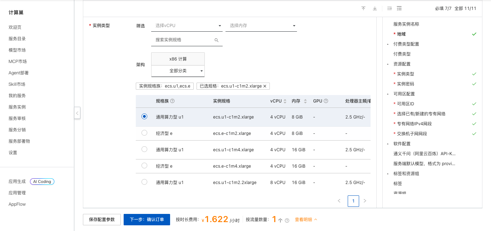
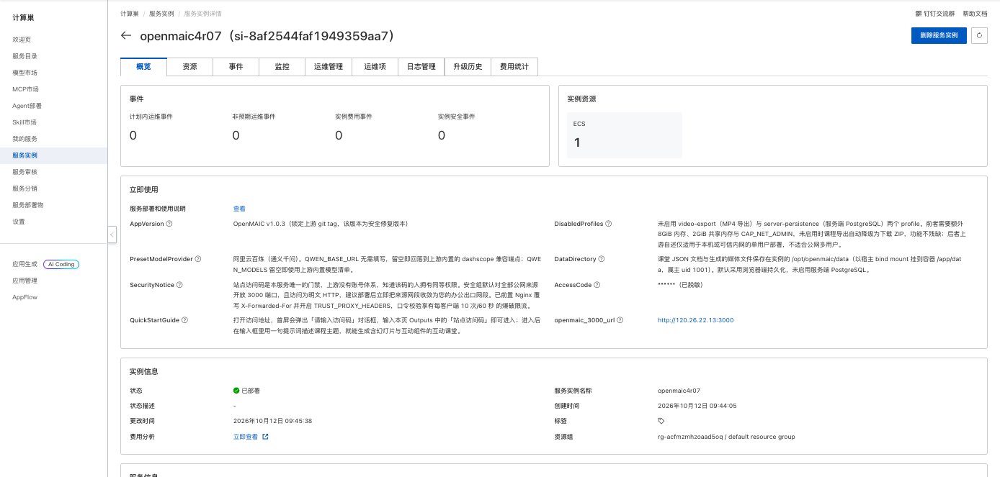
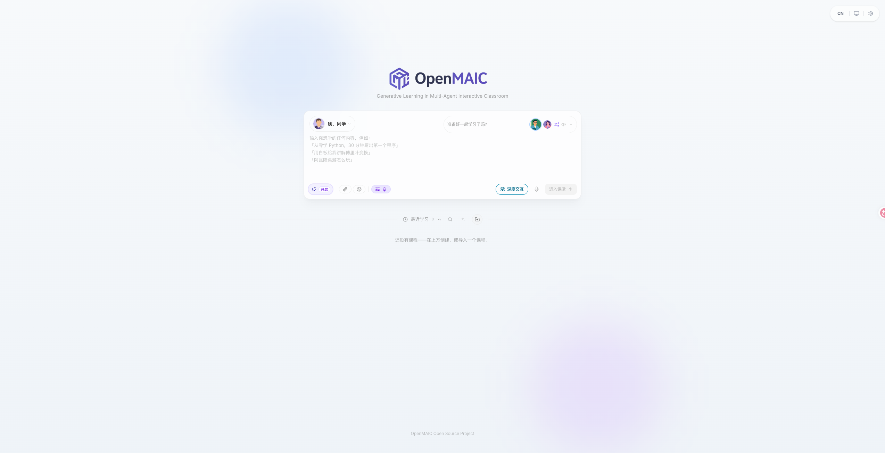

OpenMAIC 部署文档
概述
OpenMAIC 是清华大学开源的多智能体互动课堂平台（MIT 协议）。输入一句提示词，即可生成包含幻灯片、互动组件和沉浸模式的完整课程，支持多智能体协作授课、课堂问答、白板讲解和课程导出，可接入通义千问等主流大模型。
本方案通过 Docker Compose 在一台云服务器 ECS 上部署 OpenMAIC v1.0.3，并前置 Nginx 反向代理，适合教学内容制作、课程体验和开发测试。
部署流程
1. 创建服务实例
访问 OpenMAIC 部署链接，按页面提示填写部署参数。

主要参数如下：
| 参数 | 说明 |
|---|---|
| 服务实例名称 | 长度不超过 64 个字符，以英文字母开头 |
| 地域、可用区 | ECS 部署位置，建议选择离使用者较近的地域 |
| 付费类型 | 支持按量付费和包年包月 |
| 实例类型 | OpenMAIC 所在 ECS 的规格，可选 4 vCPU 8/16 GiB 或 8 vCPU 16 GiB |
| 实例密码 | ECS 登录密码，长度 8-30，需包含大写字母、小写字母、数字和特殊符号中的三项 |
| 专有网络 | 可新建专有网络，也可选择已有专有网络和交换机 |
| 通义千问 API-KEY | 可选。填写后服务端默认使用百炼模型；留空则部署后在页面设置中填写模型服务商 Key |
| 服务端默认模型 | 格式为 provider:model，默认 qwen:qwen3.7-plus |
2. 确认订单并创建
参数填写完成后，单击 下一步：确认订单。确认资源和费用，阅读并同意服务协议，然后单击 立即创建。
3. 等待部署完成
提交成功后进入服务实例列表。待实例状态变为 已部署，打开实例详情。实测部署约需 2 分钟。

4. 访问服务
在实例详情页的 立即使用 区域获取 openmaic_3000_url 访问地址和 AccessCode 站点访问码。打开地址后，在 请输入访问码 对话框中输入站点访问码，即可进入 OpenMAIC 首页。

使用说明
- 部署时未填写百炼 API Key 的，先单击输入框下方的 配置模型，填写模型服务商和 API Key。
- 在输入框中用一句话描述想学的内容，例如“用白板给我讲解傅里叶变换”，单击 进入课堂 即可生成互动课堂。
- 开启 深度交互 后，课堂会生成更多互动组件，例如 3D 演示、仿真、小游戏、思维导图和代码练习。
- 在 最近学习 中查看、搜索、导入课程，或新建文件夹整理课程。
本方案未启用上游的 MP4 视频导出与服务端 PostgreSQL 持久化，课程导出会自动采用 ZIP 格式，课程数据默认保存在浏览器端。
数据与安全
- 课堂 JSON 文档和生成的媒体文件保存在 ECS 的
/opt/openmaic/data目录。删除服务实例会释放 ECS，请提前导出需要保留的课程。 - 站点访问码是唯一的访问门禁，知道该码的人拥有相同权限，请勿外传。
- 安全组默认对公网开放 3000 端口，且为 HTTP 访问。建议部署后将安全组来源网段收敛为办公出口网段，或自行配置 HTTPS。
- 请妥善保管 ECS 密码、模型 API Key 和站点访问码，避免在日志或公开仓库中泄露。
资源释放
不再使用时，在计算巢控制台删除服务实例，并确认关联的 ROS 栈、ECS、VPC 等资源均已释放，避免继续产生费用。
官方文档
© 2009-2022 Aliyun.com 版权所有